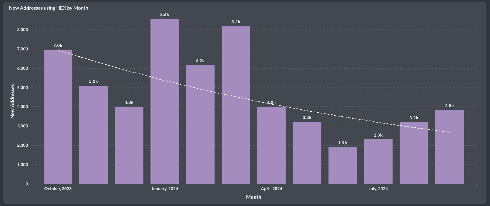

ü•æWe're back, and not just in terms of price! #Staking is coming in stronger for #HEX than in previous months. Let's dive into the $HEX monthly report.
Over 6k new #HEX stakes were started in September, returning to March levels earlier this year. Confidence in $eHEX staking has significantly grown, with over 1k stakes now, surpassing March numbers and approaching February counts.
An impressive 12 billion HEX was staked, of which 8 billion is $pHEX, showing growth and surpassing the lower figures seen during the summer.
The average staking length remains strong at 1,200 days (3.3 years) for new stakes made in September.
The average locked-up HEX is only slightly decreasing as prices rise and more people stake. That makes total sense to me. Stay tuned for more coming these days!

üíπThe trend for #HEX is undeniably positive. Let's examine the net flow into staking.
While the average price of combined HEX rose to $0.0084 in September (price is now double from that ;) ), the net flow remained on a positive trajectory toward 0 and stood at -$1.1M. This means that $1.1M in net value exited the staking pool in September. However, this is small compared to previous months, as you can see. In July, the net flow was still at -$9.4M. The trend toward positive numbers is clear, with August showing a positive net flow of +$500K, which is quite close to September's figure. Will we see a permanent reversal soon?
The positive trend is also visible in the staking start-to-end ratio, which is still below 1 on both #Ethereum and #Pulsechain, but it is stabilizing for $pHEX and recovering for $eHEX, especially. For $eHEX, the ratio improved from 0.26 last month to 0.35. A ratio above 1 would indicate that more stakes are starting than ending.

üèÉ‚Äç‚ôÄÔ∏è#HEXICANS were more active in September, onboarding more new users than in previous months. Back to April adoption numbers overall. See the charts in Part 2 of the #HEX monthly report on Adoption.
3.8k new users (addresses) were onboarded to $HEX, either on $eHEX or $pHEX. This marks the third consecutive month of growth, reaching levels similar to April this year.

The combined number of unique active native HEX users across both chains, #Ethereum and #Pulsechain, increased and is now back to April levels, with 24k active users last month.
Most of the growth came from $pHEX, which saw 21k active users, while $eHEX saw a slight increase to 5.8k. Keep in mind, these numbers represent native addresses and do not include $eHEX users on #Pulsechain, which would add to this total.

üí∏After some rest, let's continue the #HEX monthly report with Part 3: Yield.
In September, $pHEX saw its second-highest monthly yield at 44.2%, but this was only for non-penalized stakers. The other categories showed stagnation in yield numbers compared to the continuous rise in previous months. This is likely due to an increase in staking activity, including also more short-term stakes, which caused yield growth to pause. They are quite high anyway ;)
However, $eHEX yield remains higher, averaging 51.8% and reaching up to 71.7% when stakes with penalties are excluded.
Looking at the APY numbers, there is an overall slight decline, particularly in 4-year stakes, which dropped to 54% APY.

☝️ Double the penalties for naughty $pHEX Stakers in September. (part 5)
Penalties have increased on #HEX staking while the price was rising in September. This increase is solely due to doubled penalties on #Pulsechain, which reached 100M HEX in penalties. Combined with $eHEX, the total reached 158M. However, this is peanuts compared to the penalties before the summer.

We've seen the number of late stakes on Pulsechain rise to 1.7k, while on #Ethereum it was lower than in August.

Emergency end stakes (EES) also increased on the Pulsechain side, reaching 520, while $eHEX EES decreased.

The ratio of EES stakers to active stakers tells the same story. On the Pulsechain side, 0.14% of stakers emergency-ended their stakes, while on the Ethereum side it remained at 0.07%. It seems that enough stakers were shaken out on the ETH side, and the price increase is no longer causing them to react.